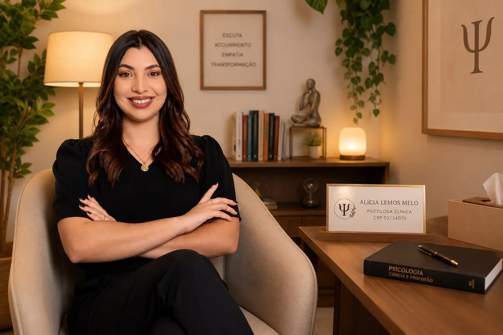

Sou Alícia Lemos, Psicóloga Clínica formada pela Universidade Federal de Pernambuco, com pós-graduação em andamento em Neuropsicologia. Sou também Acompanhante Terapêutica e Aplicadora ABA.
Minha trajetória reúne experiências ligadas ao desenvolvimento humano, à educação socioemocional e ao acompanhamento de crianças e adolescentes, incluindo o trabalho com pessoas neurodivergentes.
Parto do reconhecimento de que cada pessoa tem uma história, um contexto e necessidades próprias. Por isso, procuro compreender não apenas o que alguém apresenta como dificuldade, mas também suas relações, seus recursos, suas experiências e as condições em que vive.
Na clínica, busco construir um espaço de escuta, acolhimento e reflexão, respeitando a singularidade de cada pessoa, casal, família e processo.
Formação e experiência
- Graduação em PsicologiaUniversidade Federal de Pernambuco (UFPE)
- Pós-graduação em NeuropsicologiaEm andamento
- Educação socioemocionalExperiência profissional
- Acompanhamento de crianças e adolescentesIncluindo o trabalho com pessoas neurodivergentes
- Acompanhamento terapêutico e práticas baseadas em ABAAcompanhante Terapêutica e Aplicadora ABA
CRP 02/34070 · Conselho Regional de Psicologia da 2ª Região (Pernambuco).
Vamos conversar?
Conte brevemente o que você procura e eu explico como funciona o atendimento.